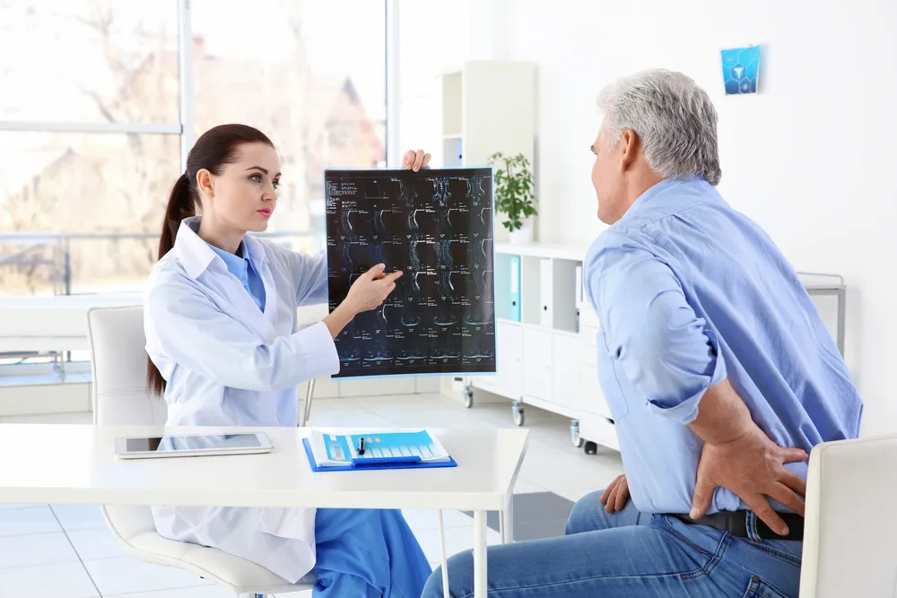

Signs and Symptoms of Osteoporosis in Men

It can be hard to know when we’re at risk for bone loss and deterioration — otherwise known as osteoporosis. Unlike skin problems or internal issues, we can’t always see what’s affecting our bones.
However, there are ways for men to determine if they’re at risk of developing osteoporosis , a significant health issue affecting older men and women. Let’s take a look at the top signs and symptoms of serious bone loss and deterioration in male patients…
Muscle Pain and Cramps
When you think of osteoporosis, you think of pain emanating from the bones, not muscles. But muscle pain and cramps can be a sign that one is experiencing bone loss in both men and women, claims WebMD. In fact, many people confuse pain associated with bone loss with muscle pain .
That’s why it’s important to see your doctor and explore the pain in closer detail. Be sure to take your time and carefully describe the problem. If your doctor isn’t willing to take the time to make a proper diagnosis, consider getting a second opinion.
Difficulty Keeping Active
Most health experts recommend adults get at least 30-minutes of moderately intense physical activity each day. But that can be a difficult goal to accomplish in men feeling pain or discomfort.
If you’re finding physical activity difficult due to pain in your back or joints, it’s time to see a physician. Consider talking to your family members about a family history of osteoporosis or bone loss. Dealing with the issue early can help you manage pain and keep it under control in the future.
Vitamin D Deficiency
Having low vitamin D levels isn’t a sign of osteoporosis, but it can be a factor in the loss of adequate bone density. In fact, males with vitamin D deficiency are more likely to experience osteoporosis, says research from the International Osteoporosis Foundation .
That’s why experts insist men, and particularly men over age 50, have their vitamin D levels checked regularly. To correct a problem, often all it takes is a little more exposure to sunlight or a daily supplement.
Fingernails That Break Easily
Those who take care of their fingernails will tell you there’s nothing more annoying than having a nail suddenly break. But there’s more to this than cosmetics. Weak or brittle fingernails can actually be a sign of osteoporosis in both men and women.
That said, sometimes nails are exposed to conditions that weaken them, and them alone. If you frequently find yourself digging in the garden, using harsh chemicals, or working with your hands, your bones may not be the problem.
Loss of Height
Many of us know older people who have gotten shorter with age. It’s an issue that has a lot to do with osteoporosis and bone loss. As the bones begin to decline in quality, our height can appear diminished, and we may even appear to shrink, says Dr. Susan E. Brown, of the Center for Better Bones .
That’s why it’s important to have regular checkups with your doctor. Older men and women should insist on having their height recorded. If there’s a decline, talk to your doctor about links to osteoporosis.
Poor Posture
Growing up, many of us were told to stand up straight, particularly when addressing our elders and superiors. When we entered the working world, it became important to sit up straight, maintaining a professional-looking posture .
The problem is, as our bones begin to deteriorate our posture is directly affected, claims research from the University of California , San Francisco . If you notice a more stooped appearance (for women they call it a dowager hump) either when sitting or standing, talk to your doctor about links to osteoporosis.
Gum Problems
The first sign of osteoporosis may not have anything to do with your bones or joints. In fact, the first visible sign of significant bone deterioration may be visible in one of the last places you’d think to see it — inside your mouth. (For more information, check out this article on 7 Things Your Mouth Says About Your Health ).
The receding of gum tissue (or periodontitis) is often the first sign of osteoporosis, according to research from the National Institutes of Health . That’s because the decline of jaw bone density can result in the receding of gums. That’s why people with a family history of osteoporosis should include their dentist in any conversations about bone loss.
Issues with Grip
Are you having a hard time gripping your golf clubs this spring? Was your last visit to the batting cage a painful affair? These problems with your grip may be an indication that osteoporosis is setting in.
The good news is that you can work on strengthening your grip and the muscles and bones in your hand through simple strength exercises. Talk to your doctor about how you can build your grip strength.
Source: https://activebeat.com/health-news/8-signs-and-symptoms-of-osteoporosis-in-men/